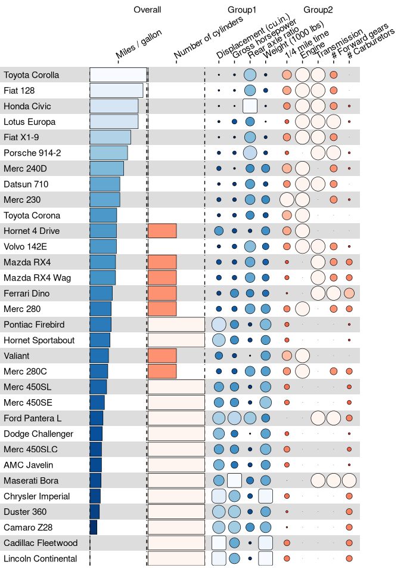

{funkyheatmap} allows generating heatmap-like visualisations for data frames. Funky heatmaps can be fine-tuned by providing annotations of the columns and rows, which allows assigning multiple palettes or geometries or grouping rows and columns together in categories.
Installation
You can install funkyheatmap like so:
install.packages("funkyheatmap")You can also download {funkyheatmap} as a standalone executable or a Nextflow pipeline.
Example
Let’s use the mtcars dataset as an example of what a funky heatmap looks like.
library(funkyheatmap)
library(dplyr, warn.conflicts = FALSE)
library(tibble, warn.conflicts = FALSE)
data("mtcars")
data <- mtcars %>%
rownames_to_column("id") %>%
arrange(desc(mpg))You need to provide some information on how each column should be rendered, for example:
column_info <- tribble(
~id, ~group, ~name, ~geom, ~palette, ~options,
"id", "", "", "text", NA, list(hjust = 0, width = 6),
"mpg", "overall", "Miles / gallon", "bar", "palette1", list(width = 4, legend = FALSE),
"cyl", "overall", "Number of cylinders", "bar", "palette2", list(width = 4, legend = FALSE),
"disp", "group1", "Displacement (cu.in.)", "funkyrect", "palette1", lst(),
"hp", "group1", "Gross horsepower", "funkyrect", "palette1", lst(),
"drat", "group1", "Rear axle ratio", "funkyrect", "palette1", lst(),
"wt", "group1", "Weight (1000 lbs)", "funkyrect", "palette1", lst(),
"qsec", "group2", "1/4 mile time", "circle", "palette2", lst(),
"vs", "group2", "Engine", "circle", "palette2", lst(),
"am", "group2", "Transmission", "circle", "palette2", lst(),
"gear", "group2", "# Forward gears", "circle", "palette2", lst(),
"carb", "group2", "# Carburetors", "circle", "palette2", lst()
)Now you can generate the funky heatmap:
funky_heatmap(
data,
column_info = column_info,
position_args = position_arguments(expand_xmax = 4)
)
More information
The reference documentation on
funky_heatmap()details the exact formats of each annotation object that you can pass to it.Check out the vignette
vignette("mtcars", "funkyheatmap")for more information on how to customize this visualisation.In
vignette("dynbenchmark", "funkyheatmap")we use funkyheatmap to regenerate the figures from Saelens et al. (2019) doi:10.1038/s41587-019-0071-9.We used Viash to wrap the
funkyheatmap::funky_heatmap()function as a standalone executable and Nextflow module.